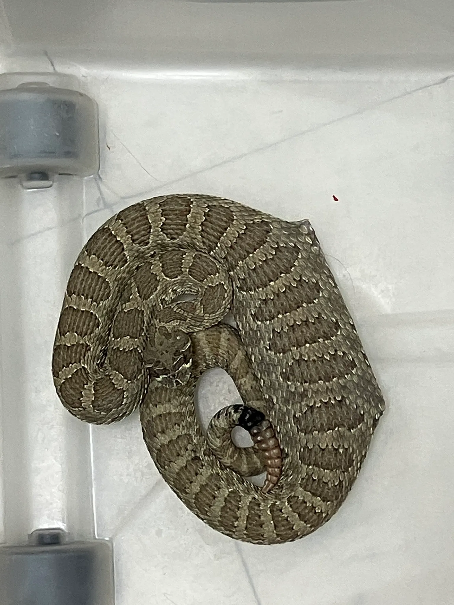

The art of making a data cube¶
Ty Tuff, ESIIL Data Scientist 2023-10-27
#library(Rcpp)
library(sf)
library(gdalcubes)
library(rstac)
library(gdalUtils)
library(terra)
library(rgdal)
library(reshape2)
library(osmdata)
library(terra)
library(dplyr)
library(stars)
library(ggplot2)
library(colorspace)
library(geos)
library(osmdata)
library(ggthemes)
library(tidyr)
gdalcubes_options(parallel = 8)
sf::sf_extSoftVersion()
## GEOS GDAL proj.4 GDAL_with_GEOS USE_PROJ_H
## "3.11.0" "3.5.3" "9.1.0" "true" "true"
## PROJ
## "9.1.0"
gdalcubes_gdal_has_geos()
## [1] TRUE
library(osmdata)
library(dplyr)
library(sf)
library(terra)
library(tidyterra)
library(glue)
library(ggplot2)
library(ggthemes)
library(stars)
library(magrittr)
library(landsat)
The philosophy of moving data in the cloud¶
The philosophy of moving data in the cloud represents a paradigm shift in how we approach data within our analytical processes. Instead of the traditional method of transferring entire datasets to our local environments, the cloud encourages a more efficient model: bring your analysis to the data. This approach minimizes data movement and leverages the cloud’s computational power and scalability. By utilizing cloud-native tools and services, we can run our analyses directly on the data where it resides, selectively accessing and processing only what is necessary. This not only streamlines workflows but also significantly reduces overheads related to data transfer and storage management. In essence, the focus is on diverting computational resources to the data rather than the cumbersome and resource-intensive practice of moving large datasets to and fro.
‘To Make’ or ‘To Take’ a photo¶
The distinction between making and taking a photograph lies in the approach and intent behind the camera. Taking a photo is often a reactive process, where the photographer captures moments as they naturally unfold, seizing the spontaneity of life without alteration. It’s a passive form of photography where the emphasis is on the right timing and the natural interplay of elements within the frame. On the other hand, making a photo is a proactive and deliberate act. It is akin to craftsmanship, where a professional photographer starts with a concept and utilizes a variety of tools and techniques to stage and construct the desired scene. They actively manipulate lighting, composition, and subjects to create a photograph that aligns with their pre-visualized artistic vision. While both methods use a camera to produce a photograph, making a photo involves a creation process, whereas taking a photo is about finding the scene.
David Yarrow is a famous photographer who ‘makes’ his photographs.


What does it mean to ‘make’ a data cube?¶
The artistry of Ansel Adams’ photography serves as a compelling analogy for the meticulous craft of building a data cube from cloud data sources using tools like STAC and GDAL VSI. Just as Adams would survey the vastness of a landscape, discerning the interplay of light and shadow upon the mountains before him, a data architect surveys the expanse of available data. In this analogy, the raw data are the majestic mountains and sweeping landscapes waiting to be captured. The STAC collection acts as the photographer’s deliberate choice of scene, pointing the camera lens—our data tools—towards the most telling and coherent dataset.
 Just as Adams’
photographs are more than mere records of a landscape, but rather a
confluence of his vision, technique, and the scene’s natural beauty, so
too is the data cube more than the sum of its parts. It is the artful
synthesis of information, crafted and composed with the skill and intent
of an artist, producing not just a tool for analysis but a harmonized,
data-driven portrait of the world it represents. The builder of the data
cube is, indeed, an artist, and the data cube their masterpiece,
revealing not just data, but a story, a perspective, a landscape sewn
from the raw material of cloud-sourced information.
Just as Adams’
photographs are more than mere records of a landscape, but rather a
confluence of his vision, technique, and the scene’s natural beauty, so
too is the data cube more than the sum of its parts. It is the artful
synthesis of information, crafted and composed with the skill and intent
of an artist, producing not just a tool for analysis but a harmonized,
data-driven portrait of the world it represents. The builder of the data
cube is, indeed, an artist, and the data cube their masterpiece,
revealing not just data, but a story, a perspective, a landscape sewn
from the raw material of cloud-sourced information.
As Adams would adjust his viewfinder, setting the boundaries of his photographic frame, the data builder sets the view window, filtering and transferring relevant data to their own medium, akin to Adams’ film. This is where the raw data is transformed, organized into the structured form of a data frame or data cube, a process not unlike the careful development of a photograph in a darkroom. Here, the data cube creator, much like Adams with his careful dodging and burning, harmonizes disparate elements into a cohesive whole, each decision reflecting an intention and vision for the final product.
1) The Rat through the Snake Problem: Scalability with Cloud Computing¶
Just like a snake that swallows a rat, traditional computing systems often struggle to process the large volumes of environmental data — they’re constrained by their static hardware limitations. Cloud computing introduces a python-esque capability: massive scalability. By migrating to the cloud, we essentially make the snake bigger, allowing it to handle larger “prey.” Scalable computers in the cloud can grow with the demand, providing the necessary computational power to process extensive datasets, which is vital in a field where data volumes are increasing exponentially.

2) The Antelope through the Python Problem: Streamlining with GDAL VSI¶
As we scale up, we encounter a new challenge: trying to pass an antelope through a python — a metaphor for the next level of complexity in data processing. The sheer size and complexity of the data can become overwhelming. This is where GDAL’s Virtual File System (VSI) becomes our ecological adaptation. VSI allows us to access remote data transparently and more efficiently. Instead of ingesting the entire “antelope,” VSI enables the “python” to dynamically access and process only the parts of the data it needs, when it needs them, much like constriction before digestion. This selective access minimizes the need for local storage and expedites the data handling process.

3) Drinking from a Fire Hose: Accelerated Inference with AI and ML¶
Once we’ve enabled the flow of large amounts of digestible data, we encounter the metaphorical challenge of drinking from a fire hose. The data, now flowing and accessible, is immense and rapid — posing a challenge not just to store and process, but to understand and derive meaning from in real-time. This is where artificial intelligence (AI) and machine learning (ML) step in. These technologies act as a sophisticated filtration system, enabling us to drink safely and beneficially from the torrent. AI and ML can analyze patterns, make predictions, and infer insights at a pace that keeps up with the fast stream of data, turning raw information into actionable knowledge.

By addressing these three pivotal challenges with cloud computing, GDAL VSI, and AI/ML, we not only manage to consume the data effectively but also transform our capabilities in environmental data science. We can move from mere data ingestion to meaningful data interpretation, all at a scale and speed necessary for impactful environmental analysis.
Mounting data¶
A void-filled Digital Elevation Model (DEM) is a comprehensive topographical representation where any missing data points, known as voids, have been filled in. These voids can occur due to various reasons, such as clouds or technical errors during data collection. In a void-filled DEM, these gaps are interpolated or estimated using the surrounding data to create a continuous, seamless surface model. This process enhances the utility and accuracy of the DEM for hydrological modeling, terrain analysis, and other geographical applications. The HydroSHEDS website (https://www.hydrosheds.org/hydrosheds-core-downloads) provides access to high-quality, void-filled DEM datasets like the DEM_continuous_CONUS_15s, which users can download and easily integrate into spatial analysis workflows using tools such as ‘terra’ in R, allowing for sophisticated environmental and geographical research and planning.
# Record start time
a <- Sys.time()
# Create a string with the file path using glue, then download and read the DEM file as a raster object
DEM_continuous_CONUS_15s <- glue(
"/vsizip/vsicurl/", #magic remote connection
"https://data.hydrosheds.org/file/hydrosheds-v1-dem/hyd_na_dem_15s.zip", #copied link to download location
"/hyd_na_dem_15s.tif") %>% #path inside zip file
terra::rast()
# The 'glue' function constructs the file path string, which is then passed to 'terra::rast()' to read the DEM file into R as a raster layer. '/vsizip/vsicurl/' is a special GDAL virtual file system syntax that allows reading directly from a zipped file on a remote server.
# Record end time and calculate the time difference
b <- Sys.time()
difftime(b, a)
## Time difference of 4.603666 secs
# The resulting raster object is stored in 'DEM_continuous_CONUS_15s', which now contains the void-filled DEM data ready for use
DEM_continuous_CONUS_15s # Prints out the details of the 'DEM_continuous_CONUS_15s' raster object
## class : SpatRaster
## dimensions : 13920, 20640, 1 (nrow, ncol, nlyr)
## resolution : 0.004166667, 0.004166667 (x, y)
## extent : -138, -52, 5, 63 (xmin, xmax, ymin, ymax)
## coord. ref. : lon/lat WGS 84 (EPSG:4326)
## source : hyd_na_dem_15s.tif
## name : Band_1
# output is a SpatRaster, which is the object type associated with the 'terra' package.
Continuous DEM for North America
# Record start time
a <- Sys.time()
ggplot() +
geom_spatraster(data=DEM_continuous_CONUS_15s) +
theme_tufte()

b <- Sys.time()
difftime(b, a)
## Time difference of 52.49061 secs
Calculate Slope from that DEM
SLOPE_continuous_CONUS_15s <- terra::terrain(DEM_continuous_CONUS_15s, "slope")
SLOPE_continuous_CONUS_15s
## class : SpatRaster
## dimensions : 13920, 20640, 1 (nrow, ncol, nlyr)
## resolution : 0.004166667, 0.004166667 (x, y)
## extent : -138, -52, 5, 63 (xmin, xmax, ymin, ymax)
## coord. ref. : lon/lat WGS 84 (EPSG:4326)
## source(s) : memory
## name : slope
## min value : 0.00000
## max value : 56.98691
# Record start time
a <- Sys.time()
ggplot() +
geom_spatraster(data=SLOPE_continuous_CONUS_15s) +
theme_tufte()

b <- Sys.time()
difftime(b, a)
## Time difference of 3.859545 secs
Calculate aspect from DEM
ASPECT_continuous_CONUS_15s <- terra::terrain(DEM_continuous_CONUS_15s, "aspect")
ASPECT_continuous_CONUS_15s
## class : SpatRaster
## dimensions : 13920, 20640, 1 (nrow, ncol, nlyr)
## resolution : 0.004166667, 0.004166667 (x, y)
## extent : -138, -52, 5, 63 (xmin, xmax, ymin, ymax)
## coord. ref. : lon/lat WGS 84 (EPSG:4326)
## source(s) : memory
## name : aspect
## min value : 0
## max value : 360
# Record start time
a <- Sys.time()
ggplot() +
geom_spatraster(data=ASPECT_continuous_CONUS_15s) +
theme_tufte()

b <- Sys.time()
difftime(b, a)
## Time difference of 3.650267 secs
Create a cube from those layers!
mini_stack <- c(DEM_continuous_CONUS_15s, SLOPE_continuous_CONUS_15s,ASPECT_continuous_CONUS_15s)
mini_stack
## class : SpatRaster
## dimensions : 13920, 20640, 3 (nrow, ncol, nlyr)
## resolution : 0.004166667, 0.004166667 (x, y)
## extent : -138, -52, 5, 63 (xmin, xmax, ymin, ymax)
## coord. ref. : lon/lat WGS 84 (EPSG:4326)
## sources : hyd_na_dem_15s.tif
## memory
## memory
## names : Band_1, slope, aspect
## min values : ? , 0.00000, 0
## max values : ? , 56.98691, 360
Reproject and return the bounding box coordinates for our Area of Interest
# Transform the filtered geometry to EPSG:4326 and store its bounding box
# Record start time
a <- Sys.time()
DEM_continuous_CONUS_15s |>
stars::st_as_stars() |>
st_transform("EPSG:4326") |>
st_bbox() -> bbox_4326
DEM_continuous_CONUS_15s |>
stars::st_as_stars() |>
st_transform("EPSG:32618") |>
st_bbox() -> bbox_32618
b <- Sys.time()
difftime(b, a)
## Time difference of 3.7653 mins
Get a polygon for Boulder County, reproject, and return bounding box. This is so I can make a smaller search in the stac catalog.
boulder_county <- getbb("boulder, co", format_out="sf_polygon")
boulder_county$multipolygon |>
st_transform(crs =4326 ) |>
st_bbox() -> bbox_4326_boulder
boulder_county$multipolygon |>
st_transform(crs =32720 ) |>
st_bbox() -> bbox_32720_boulder
Get a polygon for the United States and crop it to be the same size as the DEM above.
aoi <- getbb("United States", format_out="sf_polygon")
conus <- aoi$multipolygon |>
st_crop(bbox_4326)
ggplot(data=conus) +
geom_sf()

Search the Stac catalog.
STAC, or SpatioTemporal Asset Catalog, is an open-source specification designed to standardize the way geospatial data is indexed and discovered. Developed by Element 84 among others, it facilitates better interoperability and sharing of geospatial assets by providing a common language for describing them. STAC’s flexible design allows for easy cataloging of data, making it simpler for individuals and systems to search and retrieve geospatial information. By effectively organizing data about the Earth’s spatial and temporal characteristics, STAC enables users to harness the full power of the cloud and modern data processing technologies, optimizing the way we access and analyze environmental data on a global scale.
stac("https://earth-search.aws.element84.com/v1") |>
get_request()
## ###STACCatalog
## - id: earth-search-aws
## - description: A STAC API of public datasets on AWS
## - field(s): stac_version, type, id, title, description, links, conformsTo
Element 84’s Earth Search is a STAC compliant search and discovery API that offers users access to a vast collection of geospatial open datasets hosted on AWS. It serves as a centralized search catalog providing standardized metadata for these open datasets, designed to be freely used and integrated into various applications. Alongside the API, Element 84 also provides a web application named Earth Search Console, which is map-centric and allows users to explore and visualize the data contained within the Earth Search API’s catalog. This suite of tools is part of Element 84’s initiative to make geospatial data more accessible and actionable for a wide range of users and applications.
collection_formats()
## CHIRPS_v2_0_daily_p05_tif | Image collection format for CHIRPS v 2.0 daily
## | global precipitation dataset (0.05 degrees
## | resolution) from GeoTIFFs, expects list of .tif
## | or .tif.gz files as input. [TAGS: CHIRPS,
## | precipitation]
## CHIRPS_v2_0_monthly_p05_tif | Image collection format for CHIRPS v 2.0 monthly
## | global precipitation dataset (0.05 degrees
## | resolution) from GeoTIFFs, expects list of .tif
## | or .tif.gz files as input. [TAGS: CHIRPS,
## | precipitation]
## ESA_CCI_SM_ACTIVE | Collection format for ESA CCI soil moisture
## | active product (version 4.7) [TAGS: Soil
## | Moisture, ESA, CCI]
## ESA_CCI_SM_PASSIVE | Collection format for ESA CCI soil moisture
## | passive product (version 4.7) [TAGS: Soil
## | Moisture, ESA, CCI]
## GPM_IMERG_3B_DAY_GIS_V06A | Collection format for daily
## | IMERG_3B_DAY_GIS_V06A data [TAGS: Precipitation,
## | GPM, IMERG]
## L8_L1TP | Collection format for Landsat 8 Level 1 TP
## | product [TAGS: Landsat, USGS, Level 1, NASA]
## L8_SR | Collection format for Landsat 8 surface
## | reflectance product [TAGS: Landsat, USGS, Level
## | 2, NASA, surface reflectance]
## MAXAR | Preliminary collection format for MAXAR open
## | data, visual only (under development) [TAGS: ]
## MxD09GA | Collection format for selected bands from the
## | MODIS MxD09GA (Aqua and Terra) product [TAGS:
## | MODIS, surface reflectance]
## MxD10A2 | Collection format for selected bands from the
## | MODIS MxD10A2 (Aqua and Terra) v006 Snow Cover
## | product [TAGS: MODIS, Snow Cover]
## MxD11A1 | Collection format for selected bands from the
## | MODIS MxD11A2 (Aqua and Terra) v006 Land Surface
## | Temperature product [TAGS: MODIS, LST]
## MxD11A2 | Collection format for selected bands from the
## | MODIS MxD11A2 (Aqua and Terra) v006 Land Surface
## | Temperature product [TAGS: MODIS, LST]
## MxD13A2 | Collection format for selected bands from the
## | MODIS MxD13A2 (Aqua and Terra) product [TAGS:
## | MODIS, VI, NDVI, EVI]
## MxD13A3 | Collection format for selected bands from the
## | MODIS MxD13A3 (Aqua and Terra) product [TAGS:
## | MODIS, VI, NDVI, EVI]
## MxD13Q1 | Collection format for selected bands from the
## | MODIS MxD13Q1 (Aqua and Terra) product [TAGS:
## | MODIS, VI, NDVI, EVI]
## MxD14A2 | Collection format for the MODIS MxD14A2 (Aqua
## | and Terra) product [TAGS: MODIS, Fire]
## PlanetScope_3B_AnalyticMS_SR | Image collection format for PlanetScope 4-band
## | scenes [TAGS: PlanetScope, BOA, Surface
## | Reflectance]
## Sentinel2_L1C | Image collection format for Sentinel 2 Level 1C
## | data as downloaded from the Copernicus Open
## | Access Hub, expects a list of file paths as
## | input. The format works on original ZIP
## | compressed as well as uncompressed imagery.
## | [TAGS: Sentinel, Copernicus, ESA, TOA]
## Sentinel2_L1C_AWS | Image collection format for Sentinel 2 Level 1C
## | data in AWS [TAGS: Sentinel, Copernicus, ESA,
## | TOA]
## Sentinel2_L2A | Image collection format for Sentinel 2 Level 2A
## | data as downloaded from the Copernicus Open
## | Access Hub, expects a list of file paths as
## | input. The format should work on original ZIP
## | compressed as well as uncompressed imagery.
## | [TAGS: Sentinel, Copernicus, ESA, BOA, Surface
## | Reflectance]
## Sentinel2_L2A_THEIA | Image collection format for Sentinel 2 Level 2A
## | data as downloaded from Theia. [TAGS: Sentinel,
## | ESA, Flat Reflectance, Theia]
Building a stac collection by aiming your camera at the landscape
Creating a STAC collection is akin to a photographer framing a shot; the landscape is rich with diverse data, mirroring a scene bustling with potential subjects, colors, and light. Just as a photographer selects a portion of the vista to capture, focusing on elements that will compose a compelling image, a data scientist must similarly navigate the vast data terrain. They must ‘point their camera’ judiciously, ensuring that the ‘frame’ encapsulates the precise data needed. This careful selection is crucial, as it determines the relevance and quality of the data collection, much like the photographer’s choice dictates the story a photograph will tell.
# Record start time
a <- Sys.time()
# Initialize STAC connection
s = stac("https://earth-search.aws.element84.com/v0")
# Search for Sentinel-2 images within specified bounding box and date range
#22 Million items
items = s |>
stac_search(collections = "sentinel-s2-l2a-cogs",
bbox = c(bbox_4326_boulder["xmin"],
bbox_4326_boulder["ymin"],
bbox_4326_boulder["xmax"],
bbox_4326_boulder["ymax"]),
datetime = "2021-05-15/2021-05-16") |>
post_request() |>
items_fetch(progress = FALSE)
# Print number of found items
length(items$features)
## [1] 1
# Prepare the assets for analysis
library(gdalcubes)
assets = c("B01", "B02", "B03", "B04", "B05", "B06",
"B07",
"B08", "B8A", "B09", "B11", "B12", "SCL")
s2_collection = stac_image_collection(items$features, asset_names = assets,
property_filter = function(x) {x[["eo:cloud_cover"]] < 20}) #all images with less than 20% clouds
b <- Sys.time()
difftime(b, a)
## Time difference of 0.4706092 secs
# Display the image collection
s2_collection
## Image collection object, referencing 1 images with 13 bands
## Images:
## name left top bottom right
## 1 S2B_13TDE_20210516_0_L2A -106.1832 40.65079 39.65576 -104.8846
## datetime srs
## 1 2021-05-16T18:02:54 EPSG:32613
##
## Bands:
## name offset scale unit nodata image_count
## 1 B01 0 1 1
## 2 B02 0 1 1
## 3 B03 0 1 1
## 4 B04 0 1 1
## 5 B05 0 1 1
## 6 B06 0 1 1
## 7 B07 0 1 1
## 8 B08 0 1 1
## 9 B09 0 1 1
## 10 B11 0 1 1
## 11 B12 0 1 1
## 12 B8A 0 1 1
## 13 SCL 0 1 1
Setting up your camera and film
The camera through which the data scientist frames the shot is multifaceted, akin to the tools and processes they employ. The camera’s film, analogous to the data cube, defines the resolution and dimensions of the captured data, shaping how the final dataset will be utilized. The lens and its settings—focus, aperture, and exposure—determine the clarity, depth, and breadth of the captured information, much like the algorithms and parameters set by the data scientist dictate the granularity and scope of the data cube. The flash, like data enhancement techniques, can illuminate hidden details, ensuring that the data cube, the final product, is as informative and accurate as the landscape it represents.

# Record start time
a <- Sys.time()
# Define a specific view on the satellite image collection
v = cube_view(
srs = "EPSG:32720", #this is harder than expected.
dx = 100,
dy = 100,
dt = "P1M",
aggregation = "median",
resampling = "near",
extent = list(
t0 = "2021-05-15",
t1 = "2021-05-16",
left = bbox_32720_boulder[1],
right = bbox_32720_boulder[2],
top = bbox_32720_boulder[4],
bottom = bbox_32720_boulder[3]
)
)
b <- Sys.time()
difftime(b, a)
## Time difference of 0.002738953 secs
# Display the defined view
v
## A data cube view object
##
## Dimensions:
## low high count pixel_size
## t 2021-05-01 2021-05-31 1 P1M
## y -3103099.52398788 15434400.4760121 185375 100
## x -3178878.98542359 15369521.0145764 185484 100
##
## SRS: "EPSG:32720"
## Temporal aggregation method: "median"
## Spatial resampling method: "near"
Take a picture!
Raster style
# Record start time
a <- Sys.time()
s2_collection |>
raster_cube(v) |>
select_bands(c( "B04", "B05")) |>
apply_pixel(c("(B05-B04)/(B05+B04)"), names="NDVI") |>
write_tif() |>
raster::stack() -> x
x
## class : RasterStack
## dimensions : 185375, 185484, 34384096500, 1 (nrow, ncol, ncell, nlayers)
## resolution : 100, 100 (x, y)
## extent : -3178879, 15369521, -3103100, 15434400 (xmin, xmax, ymin, ymax)
## crs : +proj=utm +zone=20 +south +datum=WGS84 +units=m +no_defs
## names : NDVI
b <- Sys.time()
difftime(b, a)
## Time difference of 4.132932 mins
STARS style
# Record start time
a <- Sys.time()
s2_collection |>
raster_cube(v) |>
select_bands(c("B04","B05")) |>
apply_pixel(c("(B05-B04)/(B05+B04)"), names="NDVI") |>
stars::st_as_stars() -> y
b <- Sys.time()
difftime(b, a)
## Time difference of 1.459866 mins
y
## stars_proxy object with 1 attribute in 1 file(s):
## $NDVI
## [1] "[...]/filec5982c38536c.nc:NDVI"
##
## dimension(s):
## from to offset delta refsys point
## x 1 185484 -3178879 100 WGS 84 / UTM zone 20S NA
## y 1 185375 15434400 -100 WGS 84 / UTM zone 20S NA
## time 1 1 NA NA POSIXct FALSE
## values x/y
## x NULL [x]
## y NULL [y]
## time [2021-05-01,2021-06-01)
Extract data
# Record start time
a <- Sys.time()
x <- s2_collection |>
raster_cube(v) |>
select_bands(c("B01", "B02", "B03", "B04",
"B05", "B06", "B07", "B08",
"B8A", "B09", "B11", "B12")) |>
extract_geom(boulder_county$multipolygon) |>
rename(
"time" = "time",
"443" = "B01",
"490" = "B02",
"560" = "B03",
"665" = "B04",
"705" = "B05",
"740" = "B06",
"783" = "B07",
"842" = "B08",
"865" = "B8A",
"940" = "B09",
"1610" = "B11",
"2190" = "B12"
)
b <- Sys.time()
difftime(b, a)
## Time difference of 1.699016 mins
head(x)
## FID time 443 490 560 665 705 740 783 842 865 940 1610
## 1 1 2021-05-01 11096 10929 10224 9893 9956 9706 9715 9641 9511 8459 5682
## 2 1 2021-05-01 11631 11282 10550 10234 10288 10031 10032 9988 9828 9153 5802
## 3 1 2021-05-01 11900 11393 10666 10337 10398 10142 10138 10093 9927 9461 5754
## 4 1 2021-05-01 11406 10597 9928 9626 9694 9481 9516 9338 9336 8959 5726
## 5 1 2021-05-01 11399 10939 10237 9905 9978 9738 9746 9633 9555 8925 5831
## 6 1 2021-05-01 11600 11174 10462 10147 10209 9952 9960 9890 9760 9153 5773
## 2190
## 1 3917
## 2 3981
## 3 3937
## 4 4054
## 5 4097
## 6 3990
Make a timeseries
# Record start time
a <- Sys.time()
items <- s |>
stac_search(collections = "sentinel-s2-l2a-cogs",
bbox = c(-105.694362, 39.912886, -105.052774, 40.262785),
datetime = "2020-01-01/2022-12-31",
limit = 500) %>%
post_request()
S2.mask = image_mask("SCL", values=c(3,8,9))
col = stac_image_collection(items$features, asset_names = assets,
property_filter = function(x) {x[["eo:cloud_cover"]] < 30})
v = cube_view(srs = "EPSG:4326", extent = list(t0 = "2020-01-01", t1 = "2022-12-31",
left = -105.694362, right = -105.052774, top = 40.262785, bottom = 39.912886),
dx = 0.001, dy = 0.001, dt = "P1M", aggregation = "median", resampling = "bilinear")
library(colorspace)
ndvi.col = function(n) {
rev(sequential_hcl(n, "Green-Yellow"))
}
library(gdalcubes)
raster_cube(col, v, mask = S2.mask) |>
select_bands(c("B04", "B08")) |>
apply_pixel("(B08-B04)/(B08+B04)", "NDVI") |>
gdalcubes::animate(col = ndvi.col, zlim=c(-0.2,1), key.pos = 1, save_as = "anim.gif", fps = 4)
## [1] "/Users/ty/Documents/Github/hackathon2023_datacube/docs/code_for_building_cube/anim.gif"
b <- Sys.time()
difftime(b, a)
## Time difference of 4.716672 mins
y
## stars_proxy object with 1 attribute in 1 file(s):
## $NDVI
## [1] "[...]/filec5982c38536c.nc:NDVI"
##
## dimension(s):
## from to offset delta refsys point
## x 1 185484 -3178879 100 WGS 84 / UTM zone 20S NA
## y 1 185375 15434400 -100 WGS 84 / UTM zone 20S NA
## time 1 1 NA NA POSIXct FALSE
## values x/y
## x NULL [x]
## y NULL [y]
## time [2021-05-01,2021-06-01)

Saving Data Cubes to Local Storage There are occasions when we need to manipulate data cubes using other software. For such purposes, we can save data cubes to our local disk as individual netCDF files or as a series of GeoTIFF files. In the case of the latter, each temporal segment of the cube is saved as a separate (multiband) GeoTIFF file.
Both netCDF and GeoTIFF formats allow for file size reduction through compression and data packing. This process involves transforming double precision numbers into smaller integer values using a scale and offset, which can be particularly useful for managing disk space (for more details, refer to the ?write_ncdf and ?write_tif documentation).
gdalcubes_options(ncdf_compression_level = 1)
write_ncdf(cube, file.path("~/Desktop", basename(tempfile(fileext = ".nc"))))
gdalcubes_options(ncdf_compression_level = 0)
write_tif() and write_ncdf() both return the path(s) to created file(s) as a character vector.
items_2020 <- s |>
stac_search(collections = "sentinel-s2-l2a-cogs",
bbox = c(-105.694362, 39.912886, -105.052774, 40.262785),
datetime = "2020-05-01/2020-06-30") |>
post_request()
items_2021 <- s |>
stac_search(collections = "sentinel-s2-l2a-cogs",
bbox = c(-105.694362, 39.912886, -105.052774, 40.262785),
datetime = "2021-05-01/2021-06-30") |>
post_request()
col_2020 = stac_image_collection(items_2020$features, asset_names = assets)
col_2021 = stac_image_collection(items_2021$features, asset_names = assets)
v_2020 = cube_view(srs = "EPSG:32720", extent = list(t0 = "2020-05-01", t1 = "2020-06-30",
left = bbox_32720_boulder["xmin"], right = bbox_32720_boulder["xmax"], top = bbox_32720_boulder["ymax"], bottom = bbox_32720_boulder["ymin"]),
dx = 100, dy = 100, dt = "P1D", aggregation = "median", resampling = "bilinear")
v_2021 = cube_view(v_2020, extent = list(t0 = "2021-05-01", t1 = "2021-06-30"))
max_ndvi_mosaic <- function(col, v) {
raster_cube(col, v) |>
select_bands(c("B04", "B08")) |>
apply_pixel(c("(B08-B04)/(B08+B04)"), names="NDVI") |>
reduce_time("max(NDVI)")
}
suppressPackageStartupMessages(library(stars))
max_ndvi_mosaic(col_2020, v_2020) -> maxndvi_2020
max_ndvi_mosaic(col_2021, v_2021) -> maxndvi_2021
maxndvi_2021
maxndvi_2020
difference = maxndvi_2021 - maxndvi_2020
difference[difference > -0.15] = NA
names(difference) <- "Difference of max NDVI (2020 - 2019)"
flood_polygon_data3 <- glue("/vsizip/vsicurl/https://data.hydrosheds.org/file/hydrosheds-associated/gloric/GloRiC_v10_shapefile.zip/GloRiC_v10_shapefile/GloRiC_v10.shp") |>
st_read() |>
st_as_sf(coords = c("lon","lat"))
flood_polygon_data3
#st_read("/Users/ty/Downloads/GloRiC_v10_geodatabase/GloRiC_v10.gdb")
flood_polygon_data3 <- glue("/vsizip/vsicurl/https://data.hydrosheds.org/file/hydrosheds-associated/gloric/GloRiC_v10_geodatabase.zip/GloRiC_v10_geodatabase/GloRiC_v10.gdb") |>
st_read() |>
st_as_sf(coords = c("lon","lat"))
flood_polygon_data3